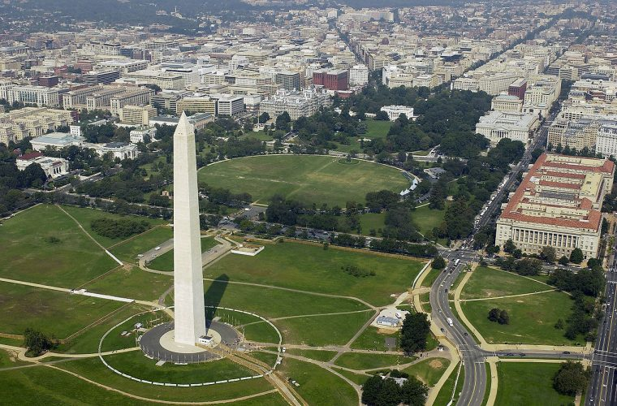

WASHINGTON D.C.
Washington D. C., la capital de Estados Unidos, es una ciudad compacta junto al río Potomac, que bordea los estados de Maryland y Virginia. Se caracteriza por sus imponentes monumentos y edificios neoclásicos, incluidos aquellos icónicos que albergan las 3 ramas del gobierno federal: el Capitolio, la Casa Blanca y la Corte Suprema. También cuenta con icónicos museos y escenarios de artes escénicas, como el Centro Kennedy.

Andrea: El punto central es el National Mall, una simétrica área verde que incluye el Monumento a Washington y otros memoriales que conmemoran guerras y a estadounidenses prestigiosos desde Abraham Lincoln hasta Martin Luther King Jr. También en el Mall se encuentra el Museo de Historia Natural, el Museo del Aire y el Espacio, y otros museos gratuitos de la Institución Smithsoniana dedicados al arte, la historia y la cultura. Aparte del Mall, Washington D. C. es una ciudad arbolada y accesible, con casas en hilera de estilo victoriano y variados atractivos, desde las tiendas modernas de Dupont Circle y los finos restaurantes de Georgetown hasta la encendida vida nocturna de U Street Corridor.
El Capitolio de los Estados Unidos es el edificio que alberga las dos cámaras del Congreso de los Estados Unidos. Se encuentra en el barrio Capitol Hill en Washington D. C., la capital del país. Una primera etapa fue terminada de construir en 1800 y es una de las principales atracciones turísticas de la ciudad.

El Monumento a Lincoln, situado en uno de los extremos horizontales del National Mall de Washington D. C., Estados Unidos, es un monumento conmemorativo creado para honrar la memoria del presidente Abraham Lincoln.
El Monumento a Washington normalmente hace referencia al gran obelisco blanco localizado en el extremo al oeste del National Mall de Washington D. C.
El Instituto Smithsoniano es un centro de educación e investigación que posee además un complejo de museos asociado. Está administrado y financiado por el Gobierno de los Estados Unidos, además de los fondos que recibe gracias a donaciones, ventas, concesiones, licencias para actividades y revistas.
El extenso y verde parque National Mall es sede de monumentos icónicos, como los monumentos a Lincoln y a Washington. En el extremo este, se encuentra el Capitolio y, hacia el norte, la Casa Blanca. Además, está rodeado por los Museos Smithsonianos y muchos grupos de escolares, corredores y equipos de sóftbol visitan sus céspedes y senderos. En las cercanías, se encuentra la Cuenca Tidal, conocida por sus cerezos en flor.